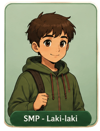
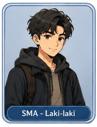
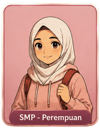
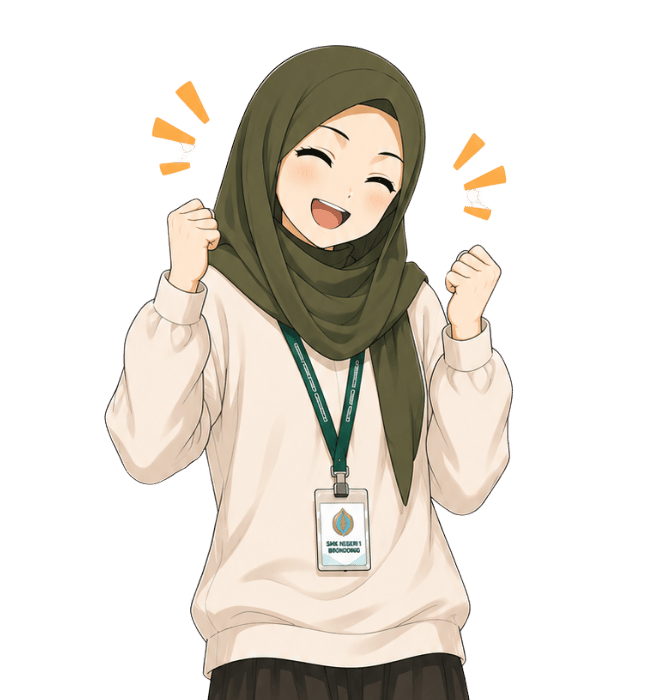
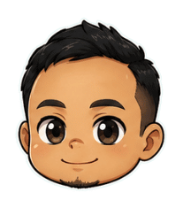

KENALIKU
Karena Setiap Remaja Berharga

Tips: Tubuhmu berharga, rawatlah dengan pengetahuan yang benar.


Pilih karakter yang paling menggambarkan dirimu.
Kamu bisa mengubahnya nanti di lobby.



🔒 PIN dipakai untuk melindungi progresmu — guru bisa memakainya untuk melihat perkembangan belajarmu di dashboard.


Rumah ini akan selalu terbuka.
— Kak Hana
Di depan gerbang, kamu bertemu remaja lain yang sedang kebingungan.
"..."
—
Poin Kamu
Poin ini nunjukin seberapa jauh kamu udah menjelajah & belajar di rumah ini — nambah tiap kamu menyelesaikan sebuah ruangan atau aktivitas refleksi.
Poin bukan buat dibelanjakan — anggap aja ini catatan perjalananmu, sama kayak lencana di Trophy.
Nama Siswa
Status Tindak Lanjut Kirim Pesan Singkat (opsional)Pesan ini akan dilihat langsung oleh siswa di dalam game. Jaga tetap suportif & tidak memuat detail masalah pribadi ya — catatan lengkap cukup untuk kamu sendiri.
Pesan dari Fasilitator
Pengaturan
Aksesibilitas
🔊 Voice over, 📝 subtitle, ⌨ navigasi keyboard, dan 🤟 video bahasa isyarat tersedia sesuai kebutuhan (lihat blueprint Bab 12).
Profil Pemain
Level 1 · 0 Poin
Nama & PIN dipakai buat nyambungin progres kamu — kalau diganti, inget nama barunya ya biar tetap bisa lanjut dari perangkat lain.
Butuh Bantuan?
Kalau kamu atau temanmu ngalamin situasi yang berat, ini beberapa pihak yang bisa dihubungi.
Konseling langsung di sekolah — rahasia & tanpa dihakimi.
Layanan bantuan hukum & pendampingan resmi 'Aisyiyah.
• Jawa Timur — Jl. Darmokali 1F, Surabaya (WA: 0812-8238-0455)
• Pusat (Jakarta) — Jl. Menteng Raya No. 62, Jakarta Pusat (Telp: 021-3918318)
Layanan Sahabat Perempuan dan Anak — hotline nasional.
Khusus untuk wilayah Jakarta.
Kamu tidak sendiri. Menghubungi bantuan ini bukan tanda lemah.

KenaliKu (Kenali Aku) adalah game edukasi interaktif berbasis web yang mengajak remaja usia 12–18 tahun menjelajahi topik kesehatan seksual & reproduksi, pubertas, menstruasi, consent, relasi sehat, hingga KBGO — lewat suasana "rumah" yang hangat dan tidak menghakimi, didampingi karakter Kak Hana.
Dirancang inklusif sejak awal — subtitle, kontras tinggi, navigasi keyboard, dan opsi bahasa isyarat — agar remaja dengan disabilitas turut memperoleh akses setara. Dilengkapi Dashboard Guru berbasis analitik untuk memantau pemahaman before–after siswa, serta Kunci Nilai dan kutipan hikmah tokoh Muhammadiyah/'Aisyiyah yang memperkuat keselarasan nilai.
Dikembangkan oleh
SMPN 1 Manado
SMPN 240 Jakarta
SMKN 1 Brondong
Keluar?
Progresmu sudah tersimpan otomatis di perangkat ini. Kamu akan kembali ke menu utama.
Game ini memiliki musik latar. Gunakan headset untuk pengalaman terbaik.
Pilih salah satu untuk melanjutkan:
Masukkan nama karakter dan PIN yang kamu buat sebelumnya.
Untuk guru BK / pendamping yang memantau progres remaja.
Akunmu perlu disetujui admin dulu sebelum bisa dipakai.
Khusus guru BK / pendamping untuk memantau progres remaja.
Kalau gurumu sudah terdaftar sebagai fasilitator, pilih namanya di sini supaya progresmu bisa dipantau.
Khusus admin/pengelola untuk mengatur konten dan data game.
Progres kamu saat ini akan diganti dengan akun baru.